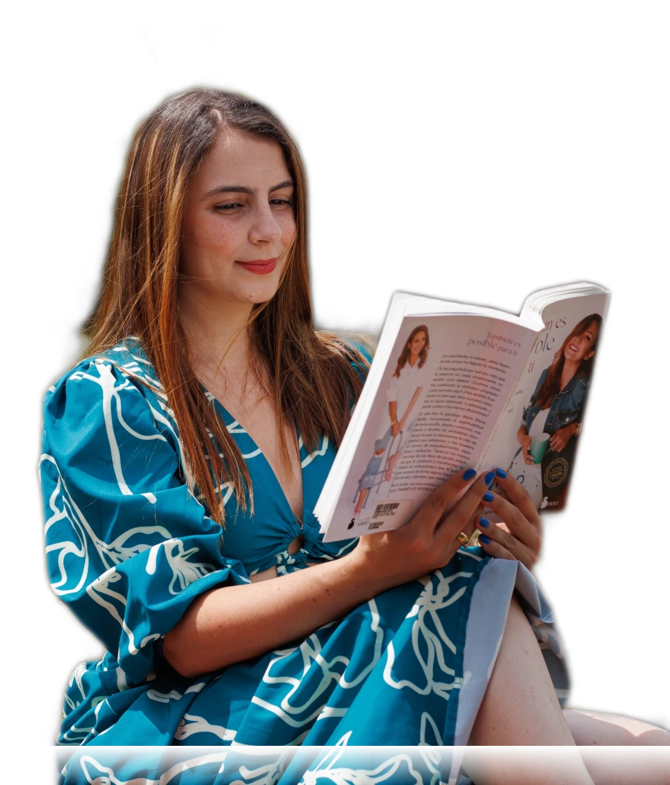
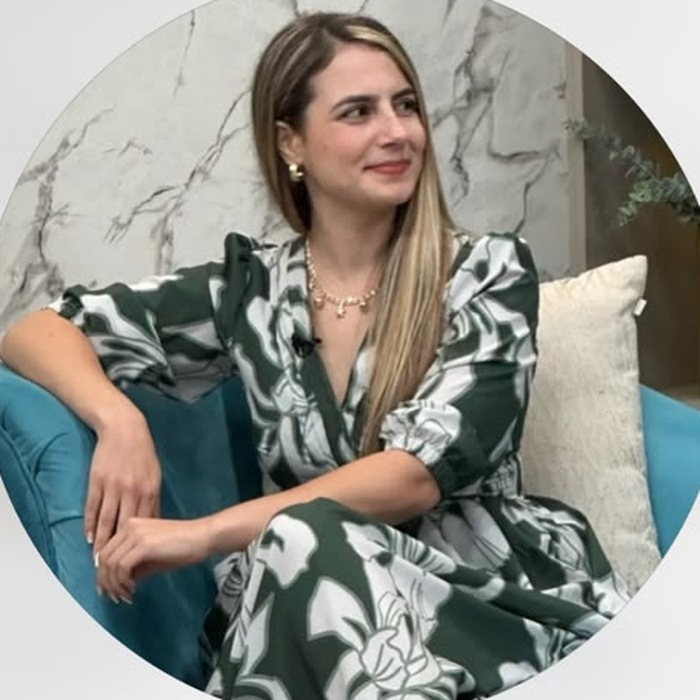

Psicología clínica para comprender tus patrones, regular tus emociones y construir nuevas formas de relacionarte contigo y con los demás.
Quiero conocer el proceso¿Te ha pasado esto?
Saberlo no siempre es suficiente. Y no significa que te falte voluntad.
A veces significa que hay algo más profundo que necesita ser comprendido, regulado y transformado.
Antes de contarte cómo trabajo
Elegir a tu terapeuta va mucho más allá de los títulos. Importa cómo te escucha, cómo mira la vida y cómo te hace sentir. Por eso quiero que me conozcas antes de decidir.
El cobro se procesa en pesos colombianos (COP). Si tu tarjeta es de otro país o está en otra moneda, tu banco puede aplicar un cargo por conversión.
Quién te acompaña

Psicóloga · Magíster en Psicología Clínica · Certificada en Crianza Respetuosa · Diplomada en Neurolingüística y Coaching · Arteterapia.
Durante mucho tiempo pensé que tenía que ser fuerte, poder con todo y tener el control para estar bien. Aprendí a exigirme, a cuidar a otros antes que a mí, a esconder la vulnerabilidad y a confundir muchas veces el control con seguridad. Por fuera podía funcionar. Por dentro, había miedo, tristeza, necesidad de aprobación y una sensación persistente de no ser suficiente.
Con el tiempo entendí que muchas de esas formas de relacionarme conmigo y con los demás no habían aparecido de la nada. Tenían una historia. Pero también descubrí algo que hoy atraviesa profundamente mi manera de hacer terapia: comprender de dónde viene un patrón no significa automáticamente saber cómo dejar de repetirlo.
He atravesado relaciones que me enseñaron sobre límites, momentos en los que mi cuerpo me mostró que no podía seguir exigiéndome de la misma manera, pérdidas que transformaron mi manera de entender la vida y etapas en las que tuve que reconstruir la relación conmigo misma. No todo fue fácil ni lineal. Pero cada proceso me llevó a hacer algo que hoy considero fundamental en terapia: dejar de pelearme con las partes de mí que habían aprendido a sobrevivir y empezar a comprenderlas para poder elegir diferente.
Mi trabajo no consiste solamente en ayudarte a entender lo que te pasa. Quiero ayudarte a reconocer lo que ocurre dentro de ti, comprender de dónde viene, aprender a regularlo y, poco a poco, construir nuevas formas de responder, relacionarte y elegir. Porque tu historia puede explicar muchas cosas de ti. Pero no tiene por qué decidir por ti para siempre.
Mi mirada terapéutica
Qué evitas, qué repites, qué callas, cómo te proteges y qué racionalizas para no sentir.
"Saberlo todo de ti no es lo mismo que transformarlo. Por eso te acompaño mientras sucede, no después."
Mi metodología
Identificar lo que ocurre dentro de ti y comenzar a ponerle nombre.
Entender de dónde vienen tus patrones, qué los activa y qué función han cumplido en tu historia.
Aprender a acompañarte emocionalmente en lugar de actuar desde el miedo, la culpa o la ansiedad.
Practicar nuevas formas de responder, relacionarte y cuidarte.
Dejar de vivir únicamente desde patrones aprendidos y tomar decisiones más conscientes y coherentes contigo.
Conócela en video
Cómo te puede acompañar
Toca cada tema para ver más
Lo que dicen quienes ya vivieron el proceso
Vera Madrigal · España
"Gracias a Elizabet! Para mí este acompañamiento ha supuesto poder arrojar luz a conflictos que arrastraba hace mucho tiempo, hacerme responsable de mi bienestar emocional y recuperar mi propio poder personal."
Francisca Jesús Díaz · Chile
"Con Elizabet la experiencia ha sido maravillosa, me ha guiado de una manera muy bonita para conocerme a mí misma, conectarme más con mi ser y mis verdaderos propósitos."
Isabela Villa · Colombia
"Estoy súper a gusto con Elizabet, sabe mucho de autoestima, amor propio y del pasado. Me está ayudando a conocerme más y curar mis heridas de la infancia."
Maricela Arteaga · Bélgica
"Desde mi primer encuentro con Elizabet, han surgido muchos cambios positivos en mi vida. Cada vez que la veo me escucha, me redirecciona y me motiva a mejorar."
Alexandra Barrios · Estados Unidos
"Me ayudó a ordenar mis pensamientos y emociones y gracias a eso pude avanzar en varios aspectos de mi vida."
Victoria Vélez · Perú
"Con su cercanía y sabiduría me guio para orientar mi vida y calmar fuertes niveles de ansiedad."
Andrea Santamaría · España
¿Cómo puedo acompañarte? — Terapia individual: si quieres trabajar profundamente en tu historia, tus patrones, tus emociones y tus vínculos.
El cobro se procesa en pesos colombianos (COP). Si tu tarjeta es de otro país o está en otra moneda, tu banco puede aplicar un cargo por conversión.
No tienes que hacerlo sola/o. Podemos empezar a trabajar en ello — escríbeme directo, te hago un par de preguntas para conocer tu situación, y desde ahí agendamos juntas tu primera sesión, a tu ritmo.
Agenda tu sesión por WhatsAppEl cobro se procesa en pesos colombianos (COP). Si tu tarjeta es de otro país o está en otra moneda, tu banco puede aplicar un cargo por conversión.
Volver a ti no significa volver a quien eras. Significa comenzar a encontrarte con quién eres y elegir desde ahí.